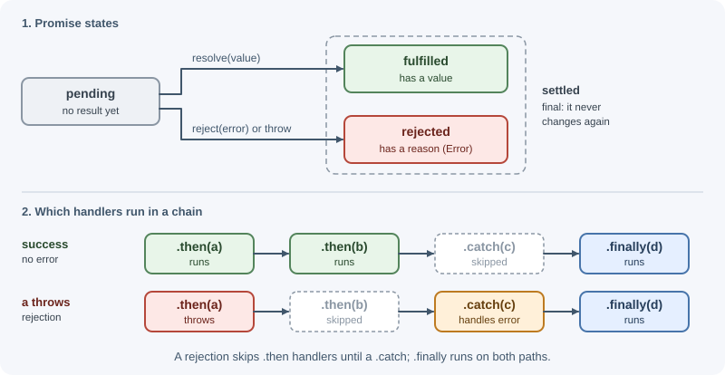
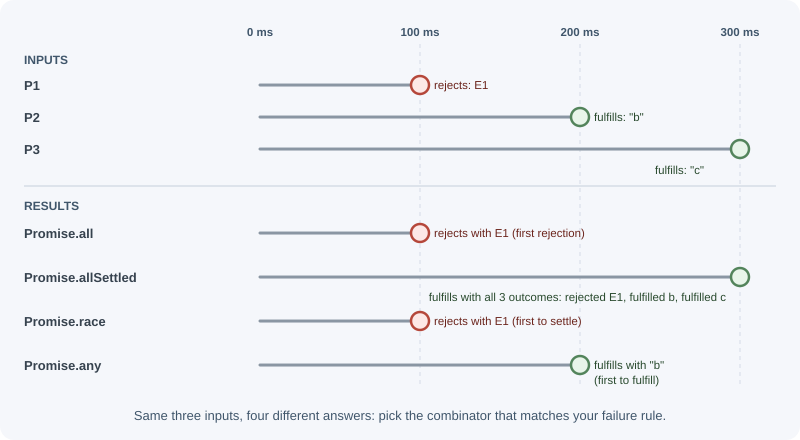
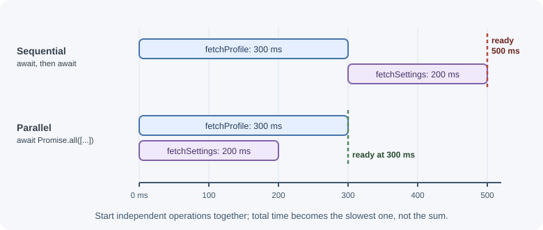

Asynchronous Programming in Node.js¶
Almost everything a backend does—reading files, querying databases, calling
other services—takes time. Node.js handles that time without blocking by
using asynchronous patterns: callbacks, promises, and async/await. This
page covers each pattern, how errors flow through them, and how to run work
in sequence, in parallel, and with timeouts.
Why it matters¶
Asynchronous code that is written badly causes the hardest backend bugs: requests that never respond, errors that disappear, operations that run one after another when they could run together, and crashes from unhandled rejections. Mastering these patterns is required for writing any reliable Node.js service. The browser-side basics are covered in async JavaScript; this page focuses on Node.js.
Real-world usage¶
- MongoDB's Node.js driver removed callback support in version 5.0 and
now offers a promise-only API. Code that still needs callbacks must use a
separate
mongodb-legacypackage. Supporting two styles was holding the API back (MongoDB Node.js driver v5.0.0 release notes). - Stripe's Node.js library is used with
await. Since v13 it automatically retries a failed request once when that is safe, retries more times with exponential backoff if you raisemaxNetworkRetries, and adds idempotency keys so a retry cannot charge a customer twice (stripe-node README). - AWS's SDK for JavaScript v3 documentation shows a Lambda function that
starts three DynamoDB calls and waits for all of them with
Promise.all, which is the parallel pattern on this page (AWS SDK for JavaScript v3: Using promises). - Express 5 forwards a rejected promise from an
asyncroute handler or middleware to the error-handling middleware, which makesasynchandlers safe to write. With Express 4 you had to catch the error and callnext(err)yourself (Express: Migrating to Express 5).
Popular tools and providers: built-in node:util (promisify),
node:timers/promises, and AbortSignal; p-limit for capping
concurrency; client libraries such as the AWS SDK v3 and the MongoDB driver
that return promises.
How it works¶
1. Error-first callbacks¶
Node.js's original style passes a callback as the last argument. The callback receives an error first, then the result:
import { readFile } from "node:fs";
readFile("config.json", "utf8", (error, text) => {
if (error) {
console.error("Could not read config:", error.message);
return; // stop: text is undefined
}
console.log("Config length:", text.length);
});
Rules of the convention:
- The first argument is an
Errorornull. - On success, results follow the error argument.
- The callback is called exactly once.
- Errors are passed to the callback, not thrown, because the original call has already returned by the time the operation fails.
Callback hell¶
Dependent steps nest deeper and deeper, and each level must handle errors:
getUser(id, (err, user) => {
if (err) return handle(err);
getOrders(user.id, (err, orders) => {
if (err) return handle(err);
getInvoice(orders[0].id, (err, invoice) => {
if (err) return handle(err);
send(invoice);
});
});
});
This "pyramid of doom" is hard to read, easy to get wrong (a missing
return calls the next step with an error), and hard to run in parallel.
Promises solve these problems.
2. Promises¶
A promise is an object representing a value that will be available later. It is always in one of three states:

Once fulfilled or rejected, a promise is settled and never changes.
const promise = new Promise((resolve, reject) => {
setTimeout(() => resolve("done"), 100);
});
promise
.then((value) => value.toUpperCase()) // returns a new promise
.then((upper) => console.log(upper)) // DONE
.catch((error) => console.error(error))
.finally(() => console.log("cleanup runs either way"));
Key behaviors:
.then()returns a new promise, so calls can be chained.- Returning a value from
.then()fulfills the next promise with it; returning a promise makes the chain wait for it. - Throwing inside
.then()rejects the next promise. The rejection skips later.then()handlers until a.catch()handles it. .finally()runs on both outcomes and passes the original result through.
Combining promises¶
| Method | Resolves when | Rejects when | Typical use |
|---|---|---|---|
Promise.all(list) |
All fulfill → array of values in input order | Any rejects (first rejection wins; others keep running but are ignored) | Independent operations that must all succeed |
Promise.allSettled(list) |
All settle → array of { status, value } / { status, reason } |
Never | Run everything, then report which failed |
Promise.race(list) |
First to settle fulfills | First to settle rejects | Timeouts, first response wins |
Promise.any(list) |
First to fulfill | All reject → AggregateError |
Try several mirrors, use the first success |

3. async and await¶
async/await is syntax built on promises that lets asynchronous code read
like synchronous code:
- An
asyncfunction always returns a promise. Returning a value fulfills it; throwing rejects it. awaitpauses the function until a promise settles, then gives the value or throws the rejection reason. Other code keeps running while it waits.
async function loadInvoice(userId) {
try {
const user = await getUser(userId);
const orders = await getOrders(user.id);
return await getInvoice(orders[0].id);
} catch (error) {
throw new Error(`Failed to load invoice for ${userId}`, { cause: error });
}
}
Sequential versus parallel¶
Each await waits before the next line starts. If operations do not depend
on each other, start them together:
// Sequential: total time ≈ 300 + 200 = 500 ms
const profile = await fetchProfile(id); // 300 ms
const settings = await fetchSettings(id); // 200 ms
// Parallel: total time ≈ max(300, 200) = 300 ms
const [profile2, settings2] = await Promise.all([
fetchProfile(id),
fetchSettings(id),
]);

Use sequential code when a step needs the previous result, or when you must limit load on a downstream service.
Converting callback APIs: util.promisify¶
util.promisify turns a function that follows the error-first convention
into one that returns a promise:
import { promisify } from "node:util";
import { exec } from "node:child_process";
const execAsync = promisify(exec);
const { stdout } = await execAsync("node --version");
console.log(stdout.trim());
Most core modules also provide promise versions directly:
import { readFile } from "node:fs/promises";
import { setTimeout as sleep } from "node:timers/promises";
import { lookup } from "node:dns/promises";
await sleep(500); // wait 500 ms without a callback
Cancellation and timeouts: AbortController¶
An AbortController creates a signal that can cancel work. Many Node.js
APIs—fetch, fs.readFile, timers/promises, events.once,
child_process—accept a signal option.
const controller = new AbortController();
setTimeout(() => controller.abort(), 2000); // cancel after 2 s
try {
const response = await fetch("https://example.com/slow", {
signal: controller.signal,
});
console.log(response.status);
} catch (error) {
if (error.name === "AbortError") console.log("Request cancelled");
else throw error;
}
AbortSignal.timeout(ms) is a shortcut that aborts automatically:
const response = await fetch(url, { signal: AbortSignal.timeout(3000) });
// Rejects with a "TimeoutError" DOMException after 3 s.
AbortSignal.any([signalA, signalB]) combines signals, for example a user
cancellation and a timeout.
Async iteration: for await...of¶
Some sources produce values over time, such as streams, paginated APIs, and events. Async iterables let you loop over them:
import { createReadStream } from "node:fs";
import { createInterface } from "node:readline";
const lines = createInterface({ input: createReadStream("access.log") });
let count = 0;
for await (const line of lines) {
if (line.includes(" 500 ")) count++;
}
console.log(`Server errors: ${count}`);
You can write your own with an async function* generator:
async function* fetchAllPages(url) {
let next = url;
while (next) {
const response = await fetch(next);
const body = await response.json();
yield* body.items;
next = body.nextPage;
}
}
Unhandled rejections¶
A promise that rejects with no .catch() and no await in a try block is
an unhandled rejection. By default, Node.js treats it as a fatal error:
it prints the error and the process exits with a non-zero code. This
protects you from silently ignoring failures. Always handle rejections, and
see errors, debugging, and performance
for process-level handlers.
Measured on Node.js 22: Promise.reject(new Error("boom")) with no handler
printed the error and ended the process with exit code 1, even though a
timer was still pending.
When to use and when not to use¶
- Use
async/awaitfor almost all new application code: request handlers, services, and scripts. - Use
Promise.all/allSettledwhen several independent operations can run at the same time, and the list is small or capped. - Use callbacks only when an API offers nothing else, and wrap them with
util.promisifyat the edge of your code. - Use
for await...offor data that arrives over time: streams, paginated APIs, and lines of a file. - Use events or streams, not one promise, for something that produces many values or never "finishes", such as a socket.
- Do not use
Promise.allon unbounded lists (thousands of IDs from a request). Cap concurrency instead.
| Need | Best fit | Why not the others |
|---|---|---|
| One result, later | async/await |
Callbacks nest and lose errors more easily |
| Several independent results | Promise.all |
Sequential await adds the waits together |
| Many results over time | Async iterator or stream | A promise settles only once |
| Repeated notifications | EventEmitter |
Promises cannot fire twice |
| A thousand jobs, gently | Concurrency limit | Promise.all starts all of them at once |
Practical examples¶
Retrying with a delay¶
import { setTimeout as sleep } from "node:timers/promises";
async function withRetry(operation, attempts = 3, delayMs = 200) {
for (let attempt = 1; attempt <= attempts; attempt++) {
try {
return await operation(); // await inside try so failures are caught
} catch (error) {
if (attempt === attempts) throw error;
await sleep(delayMs * attempt); // back off a little more each time
}
}
}
const data = await withRetry(() => fetch("https://example.com/api"));
Limited concurrency¶
Promise.all on 10,000 items starts 10,000 operations at once, which can
overwhelm a database. Process a fixed number at a time instead:
async function mapWithLimit(items, limit, worker) {
const results = new Array(items.length);
let nextIndex = 0;
async function runner() {
while (nextIndex < items.length) {
const index = nextIndex++; // safe: JS runs on one thread
results[index] = await worker(items[index]);
}
}
await Promise.all(Array.from({ length: limit }, runner));
return results;
}
const users = await mapWithLimit(userIds, 5, (id) => fetchUser(id));
Reporting partial failures¶
const results = await Promise.allSettled([
sendEmail(user),
sendSms(user),
sendPush(user),
]);
for (const result of results) {
if (result.status === "rejected") {
console.error("Notification failed:", result.reason.message);
}
}
Best practices¶
- Use
async/awaitfor new code; wrap old callback APIs withutil.promisifyor use the*/promisesmodules. - Run independent operations in parallel with
Promise.all, but cap concurrency for large lists. - Always set timeouts on network calls with
AbortSignal.timeout. - Handle every rejection:
awaitinsidetry/catch, or attach.catch(). - Add context when rethrowing:
new Error("message", { cause: error }). - Do not mix callbacks and promises for the same operation.
- Return or await promises from functions; never start one and forget it unless you deliberately handle its errors.
In production¶
- Crash loops from unhandled rejections.
- Symptom: the process exits with code 1, prints a stack trace, and the container restarts again and again.
- Detect: restart counts climb, and the last log lines before each exit show the rejected error.
- Cause: a "fire-and-forget" promise (an analytics call, a cache write)
with no
awaitor.catch(). - Fix: await it or attach
.catch()that logs the error. Keep a process-levelunhandledRejectionhandler that logs and exits so the failure stays visible. - Requests that never finish.
- Symptom: in-flight requests and memory keep rising; clients time out while the server never responds.
- Detect: an "active requests" gauge grows, and traces show outbound calls with no end time.
- Cause: outbound
fetchcalls without a timeout to a dependency that stopped answering. - Fix: add
AbortSignal.timeout(ms)to every outbound call, shorter than your own request timeout. - A connection pool exhausted by
Promise.all. - Symptom: a bulk endpoint triggers database errors about timing out while waiting for a pooled connection, and unrelated endpoints slow down too.
- Detect: pool usage hits its maximum exactly when the bulk job runs.
- Cause:
Promise.all(ids.map(...))started thousands of queries at once. - Fix: cap concurrency (
mapWithLimitabove orp-limit), or batch IDs into one query. - Retry storms.
- Symptom: a dependency that slows down briefly gets overwhelmed and stays down.
- Detect: requests to the dependency multiply exactly when its error rate rises.
- Cause: every caller retries immediately, several times, without backoff.
- Fix: use exponential backoff with jitter, a small attempt limit, and idempotency keys for writes. See timeouts, retries, and idempotency.
- Work silently skipped.
- Symptom: a batch job reports success, but some records were never saved, and no error appears.
- Detect: counts in the database do not match the input.
- Cause:
items.forEach(async ...)returned before the saves finished, and their errors were lost. - Fix: use
for...ofwithawait, orawait Promise.all(...).
Important terminology¶
- Callback: A function passed to another function to be called later.
- Error-first callback: A callback whose first argument is an error or
null. - Promise: An object representing the eventual result of an asynchronous operation.
- Settled: A promise that is fulfilled or rejected.
asyncfunction: A function that always returns a promise and can useawait.await: Pauses anasyncfunction until a promise settles.- Unhandled rejection: A rejected promise with no rejection handler.
- AbortSignal: An object that signals that an operation should be cancelled.
- Async iterable: An object that can be looped over with
for await...of.
Common mistakes and misconceptions¶
- Using
asynccallbacks withforEach.forEachignores the returned promises, so the loop "finishes" before the work does and errors are lost. Usefor...of(sequential) orPromise.all(items.map(...))(parallel).
// Wrong
ids.forEach(async (id) => await save(id));
// Right
for (const id of ids) await save(id);
await Promise.all(ids.map((id) => save(id)));
- Forgetting
await.const user = getUser(id)gives a pending promise, not the user, and errors become unhandled rejections. return promiseinsidetry. Returning a promise withoutawaitfrom inside atryblock means its rejection is not caught there. Usereturn await promisewhen you want the localcatchto run.- "
awaitblocks the server." It pauses only the current function; other requests continue. - "
Promise.allcancels the other operations when one fails." It stops waiting, but the other operations keep running. - Calling a callback twice or both calling it and throwing.
Revision questions¶
- What are the rules of the error-first callback convention?
- What are the three states of a promise, and what does "settled" mean?
- Compare
Promise.all,allSettled,race, andanywhen one input rejects. - Why does
ids.forEach(async (id) => ...)not wait for the work? - How do you add a timeout to a
fetchcall in Node.js? - What happens by default when a promise rejection is not handled?